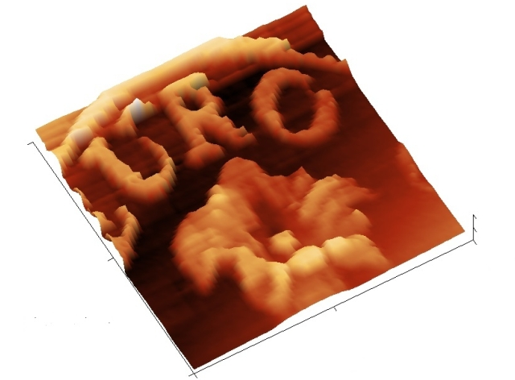
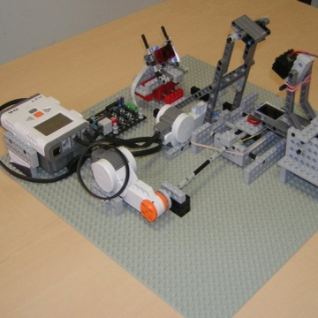

|
AFM-Lego

This model, realized with Lego bricks, reproduces the principle of operation of an AFM (Atomic Force Microscope). The probe, a sharp tip, scans the surface of the sample to be examined and every small movement of the tip is measured using a simple optical system. The beam of a diode laser hits the reflective part of the probe and continues until arriving on a quadrants photo-detector. The NXT controls the movements of the two motors that move the sample in order to scan an area of about 7 x 7 mm^2. During the scanning sessions, every small vertical movement of the tip is detected by the quadrants photo-detector and transformed into an electrical signal that the NXT sends to the PC where all signals are collected to form a three dimensional image of the sample. An Android App allows to easely control the AFM-Lego. You will be able to specify area, resolution and speed. Images will be shown on your tablet screen. Download AndroidAFM-2015 (by Alice Cavaliere)

How a real AFM works. . In atomic force microscopy ( AFM ) weak interaction forces are detected between the probe and the surface of the sample to be examined. The force sensor is a cantilever, very thin and flexible, with a sharp tip at its end. Typically it has a rectangular shape with a length of about 100 µm and width of 30 uM approximately, its thickness is usually less than 1 micron. A thin beam of light from a diode laser hits the back of the lever and it is reflected toward a quadrants photo-detector. If the probe is brought near to the sample tip, it is affected by the forces of interaction with the surface of the sample to be examined and the lever flexes. Each minimum deviation of the reflected beam, caused by a variation in the inclination of the lever, is transformed into an electrical signal proportional to the force that applies to the tip at that moment. An actuator, usually piezoelectric, moves the probe on the surface of the sample according to a matrix of points in order to explore the entire area to be examined. At the same time a feedback acts to move the probe in height, so as to keep constant the force which the probe exerts on the sample. To meet this condition the probe must change the vertical position by exactly following exactly the profile of the surface. In this way it explores the sample according to a grid and a matrix of height measurements is obtained. Raw by raw an "image" of the surface is collected, usually represented in a color code where low areas are dark and high areas are clear. The microscope is driven by a control electronics, which performs the feedback and is interfaced to a computer. The user drives the whole system through a dedicated software. With an AFM one can observe details of a sample up to a few nanometers in width with a vertical resolution of less than one nanometer. The principle of operation described above refers to the AFM used in "contact" mode, which was the first technique used and still is the most common. Nowadays, other modes of operation are exploited in which different types of interaction between the probe and the sample take place. Among these, we should be mention the "dynamic mode", in which the lever is oscillating at its resonant frequency (typically 100-200 Khz) and the control of the probe-surface distance is based on the amplitude of the oscillation. This mode is often used for biological samples such as cells, bacteria, proteins or DNA, and in general not very hard surfaces such as polymers or natural fibers.
|
||||||||||||||||||||||||||||||||||||||||||||||
|
Scientia Ludica is a project by ISC - Complex Systems Institute - CNR |